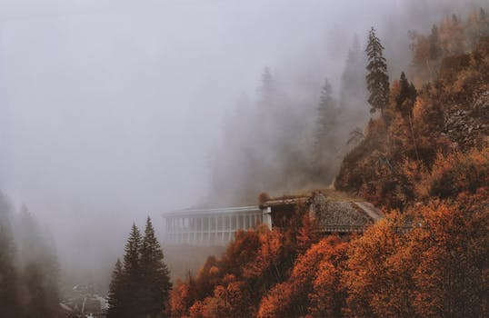
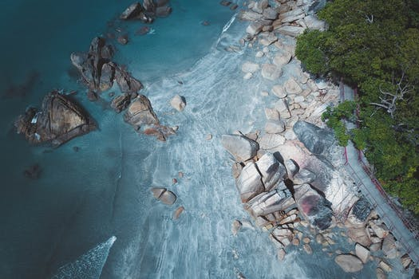
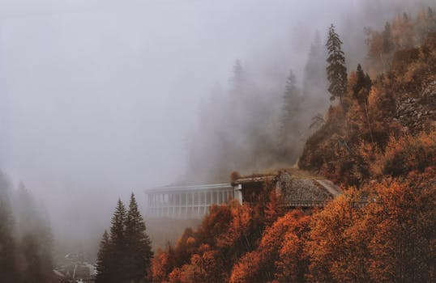
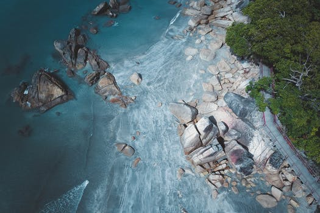

JD Photography
JD Photography’s vision is to be the leading professional source of outdoor recreation imagery in the Lower Mainland of British Columbia. JD Photography will provide an event photography service covering adventure and cycling races as well as weddings. We will also provide adventure/travel stock photography available for purchase by outdoor adventure magazine, book publishing, and gear manufacturing companies. JD Photography will serve both its event clients in the lower mainland of British Columbia while branching out to all of North America for it stock sales.
 



Tayler McCarthy, Marketing Assistant: From start to finish the process of working with JD Photography was seamless, professional and enjoyable! The studio space was impressive and we really benefited and appreciated the teams attention to detail and willingness to go above an beyond to get the shot. Results were amazing! Looking forward to working with JD Photography again soon.
Jason Maurirere, EComm NZ/AU: I am a first time customer of JD Photography, and from the first contact found Matt very Professional, and Genuine. I was very pleased to have made the choice in using there Service. With a very Professional and Down to Earth approach, John and his team have won all our future business.
Kara Payne, 180 Cakes: Thank you to the staff at JD Photography for creating photographs of my product which add a level of professionalism I could not have achieved on my own. We all know the importance of the customers first impression and the polished product shots taken by John will definitely help steer visitors towards making a purchase.
Tayler McCarthy, Marketing Assistant GAIA Skin: Working with JD Photography is a breeze. They always ensure they get the best picture for us based on our requirements. John is very professional and will do his best to get the best images finalised for you in a timely fashion. We are very grateful for their hard work and would definitely recommend JD Photography to any business!